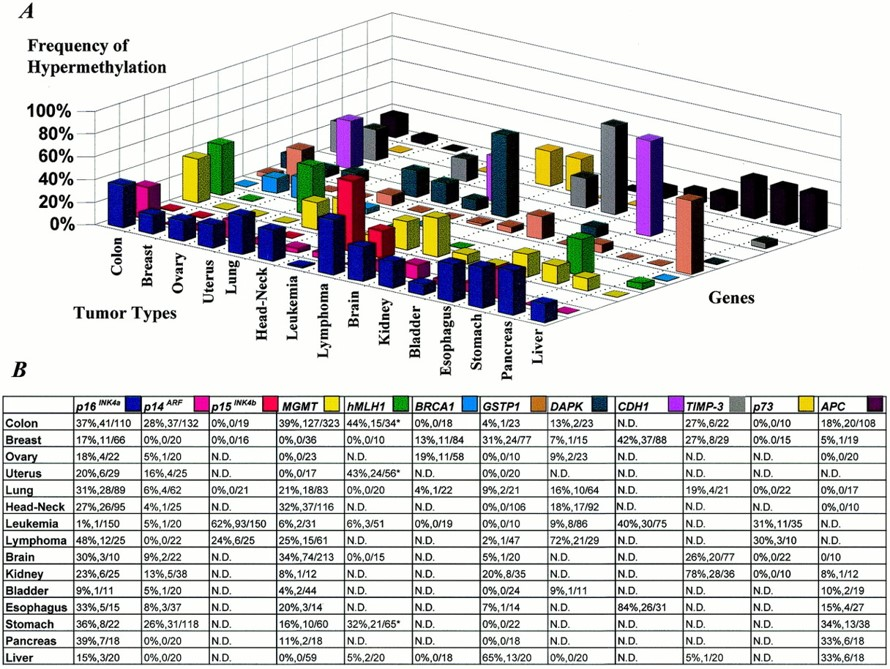

A Gene Hypermethylation Profile of Human Cancer
This research paper analyzes a series of promoter hypermethylation changes in 12 genes (p16INK4a, p15INK4b, p14ARF, p73, APC, BRCA1, hMLH1, GSTP1, MGMT, CDH1, TIMP3, and DAPK), each rigorously characterising for association with abnormal gene silencing in cancer, in DNA from over 600 primary tumor samples representing 15 major tumor types. The primary tumor samples examined in the this study constitute over 600 specimens that cover 15 major tumor types (colon, stomach, pancreas, liver, kidney, lung, head and neck, breast, ovary, endometrium, kidney, bladder, brain, and leukemia and lymphomas). The dataset is presented in the form of legend table under the table. Therefore, before plotting, I have performed these preprocessing steps on the dataset:
- Created a .csv (data.csv) file from the values given in legend table.
- 3D Bar Chart (Part A):
- The X-axis represent tumor types (e.g. Lungs, Head-Neck, etc.)
- The Y-axis represent frequnecy of Hypermethylation (0%-100%)
- The bars are color coded to heading in Part B relating to different genes.
- The height of bars represent the hypermethylation frequencies for each tumor type and gene.
- Data Table (Part B):
- Represents the same data in tabular form.
- "N.D"" indicates "No data avaialble".
- Overlapping data: The bars are overlapping in most the cases making it hard to distinguish between different values.
- Bar height: It is really hard to find the correct value of frequency from y-axis leading to misinterpretation of data.
- Color Coding: The bars colored with respect to Genes and it is hard to distinguish between different colors. For example, MGMT and p73 have almost same color code.
- Clutter: The 3D aspect is adding unnecessary complexity and clutter making it hard to grasp a quick insight into the information. For example, it is really hard to read the value of Tumor Types for repsective Genes wihtout looking up in the table.
- Labels: For genes, one may have to look at color codes given in Part B of the visualization.
- Empty spaces: It is not clear in the 3D-Bar graph what message the empty spaces convey without looking at the data table.

The heatmap with labels shows the Frequency of Hypermethylation by Tumor Type and Genes, with color intensity representing the frequency. It is really easy to tell the main trends in this plot. For example CDH1 shows significant methylation in Esophagus. This is clearly visible by color coded gradient. Similar trends are readily distinguishable by a glance at the 2D-heatmap plot. For specific Tumor Type and Genes it is really easily to find the trend. For example, p16INK4a shows significant methylation in colon, and lymphoma. The white cells with "N.D" text show that certain gene-tumor combinations have no determined values. Nevertheless, the key-aspects of this plot are:
- Clarity: The data is displayed in a simple manner with clarity. There is no complexity or clutter.
- No Overlapping: Unlike the 3D-chart, the heatmap does not have issues of overlapping data ensuring that all information is visible.
- Color Coding: The heat intensity (color gradient) is used which represents different frequencies provide immediate clues about the magnitude of values.
- Overlaying Labels: Text labels directly on the heatmap provide immediate, and precise values eliminating the need for referencing a legend or table.